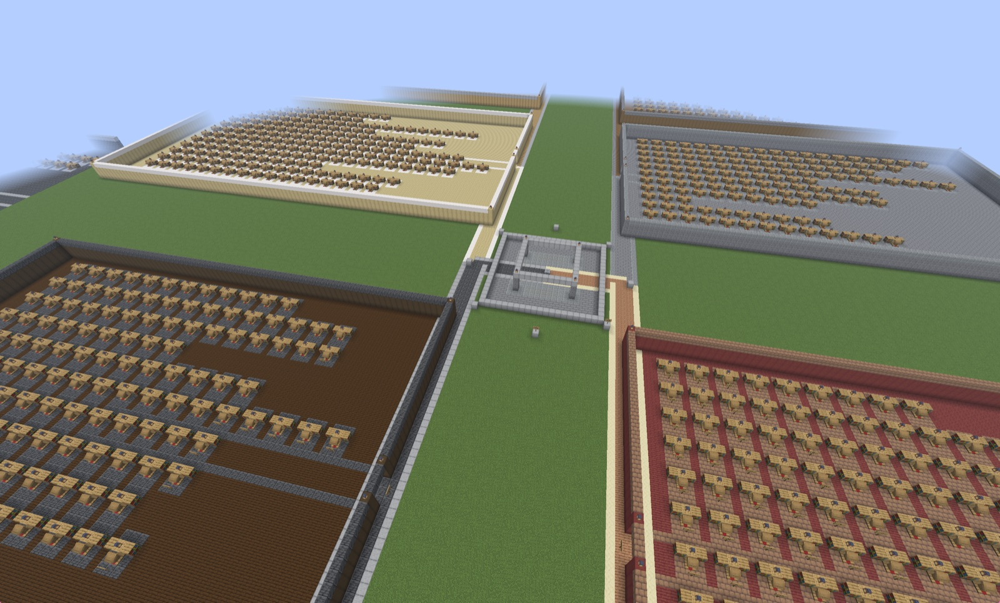
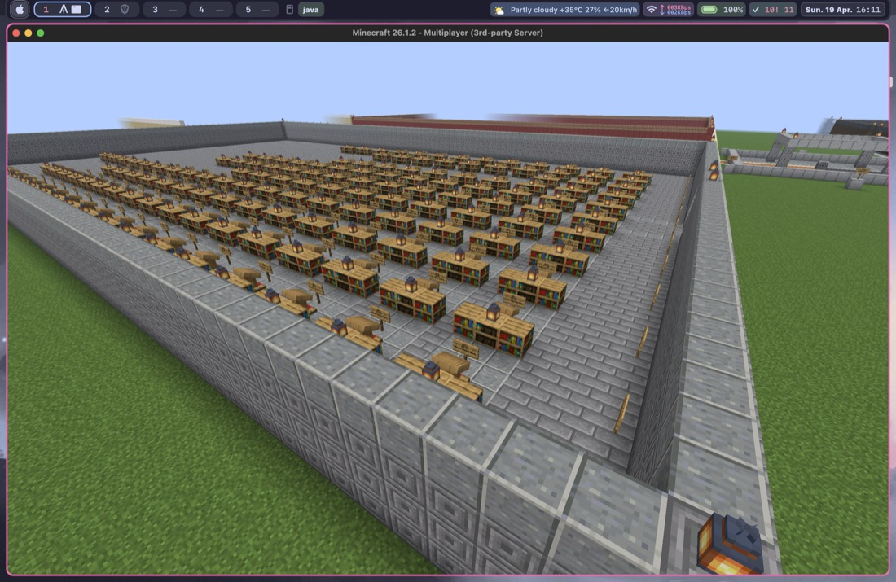
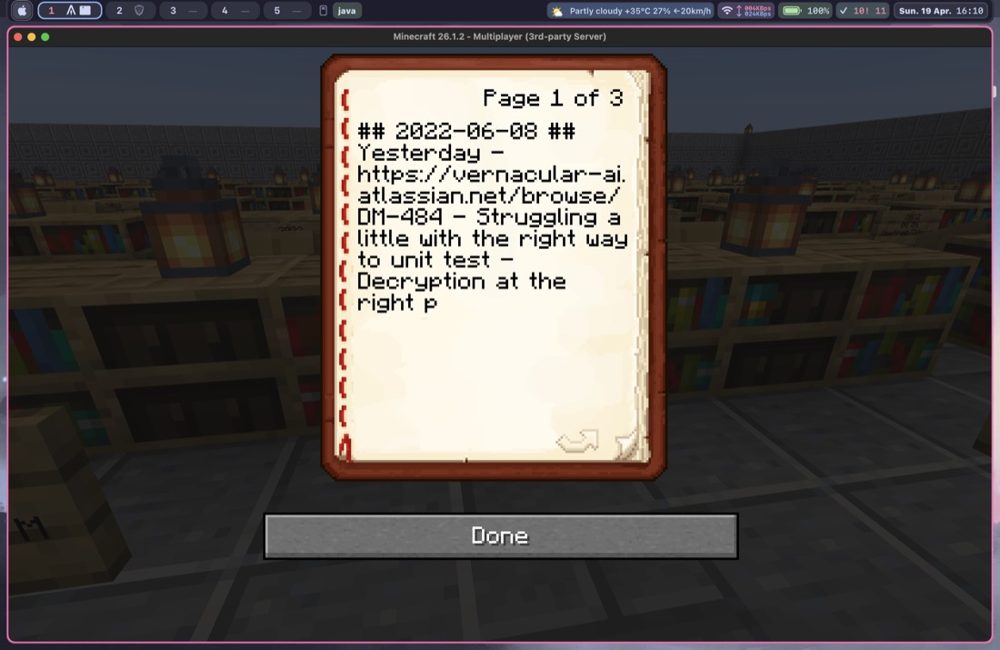
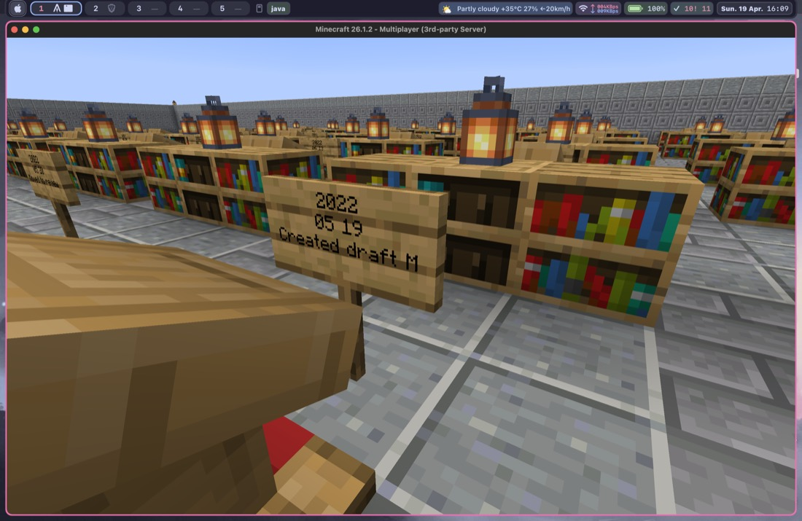

Input
Markdown vault
Bring an Obsidian-style folder of notes. The current planner lays out one district per top-level folder.
Minecraft x markdown vaults
Mine Palace turns an Obsidian-style vault into a Minecraft memory palace. Top-level folders become districts. Notes become alcoves, lecterns, shelves, and signs.
World view
The full world view shows the room-based library as a single connected space. Below that, the split views show a second library angle, a bookshelf detail, and a single note view.




Input
Bring an Obsidian-style folder of notes. The current planner lays out one district per top-level folder.
Shape
You get a central hub, district paths, note alcoves, and objects in-world so the structure feels navigable instead of random.
Deploy
Inspect the preview first, then replay generated commands over RCON or use the function files however you like.
How it works
01
Use the bundled sample vault for a demo, or point the planner at your own notes directory.
02
The CLI writes a manifest, build commands, optional book commands, and a visual HTML preview.
03
Open the preview, confirm the layout, then apply the generated commands to a running Minecraft server.
Quickstart
PYTHONPATH=src python3 -m mine_palace.cli demo --output build/demo
This creates a sample vault plus the world plan, commands, and
preview in build/demo.
PYTHONPATH=src python3 -m mine_palace.cli plan \
--vault /path/to/your/vault \
--output build/my-world \
--limit 60
Use --include if you want to bias the build toward
specific folders instead of your whole vault.
open build/my-world/preview/index.htmlThe preview is the sanity check. It shows the hub, districts, note count, and overall world layout before you touch Minecraft.
export MC_RCON_PASSWORD='...'
PYTHONPATH=src python3 -m mine_palace.cli deploy-rcon \
--artifacts build/my-world \
--host 127.0.0.1 \
--port 25575
If written-book commands do not match your server version, use
--skip-books in the deployment flow.
What you need
manifest.json for the planned layoutcommands/build.txt for replayable commandsmcfunction/build.mcfunction for function-based usepreview/index.html for visual inspection